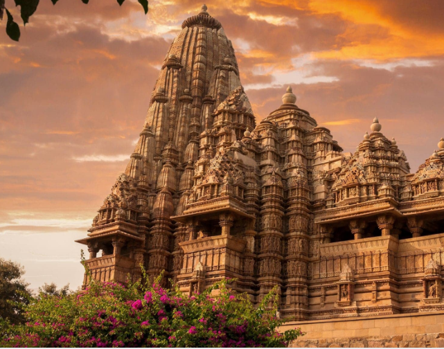
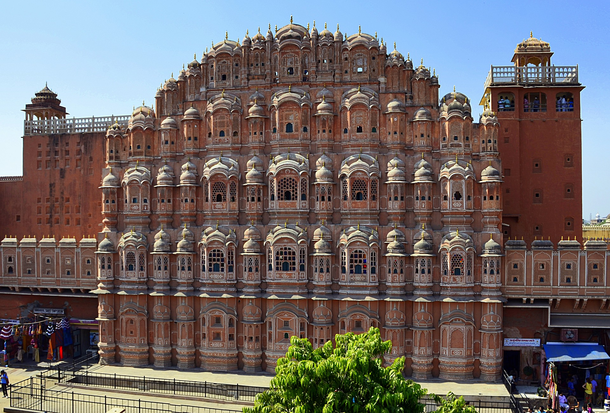

Taj Mahal

Amer Fort

Qutub Minar

Mysore Palace

Taj Mahal |
Amer Fort |
Qutub Minar |
Mysore Palace |
Virupaksha Temple |
 Mahabalipuram |
 Sanchi Stupa |
Khajuraho Temple |
 Victoria Memorial |
 s Hawa Mahal |